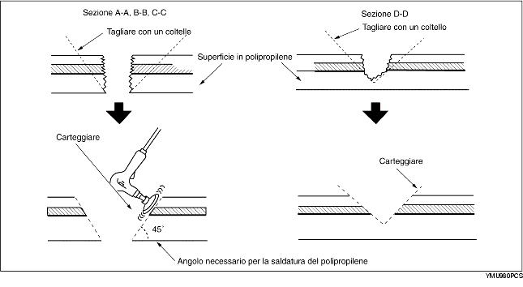

Riparazione di un paraurti in polipropilene il cui danno ha intaccato la superficie in polipropilene ed è troppo grave per poter essere riparato con una semplice verniciatura.
1. Tagliare con un coltello i bordi rugosi attorno alla zona danneggiata in modo da lisciarla. Carteggiare la zona con una levigatrice in modo da ottenere un angolo di circa 45°.

2. Saldare la zona danneggiata.
3. Fondere con una pistola termica la bacchetta di saldatura di polipropilene e riempire la spaccatura.
4. Carteggiare la superficie del polipropilene gradualmente in quanto potrebbe fondersi per effetto del calore prodotto. Carteggiare la zona dove verrà applicato lo stucco.
5. Usando un pennello, applicare una mano di fondo di polipropilene distribuendola uniformemente su di un'area maggiore di quella riparata. Lasciar asciugare per circa 10 minuti a 20 °C (68 °F).
6. Miscelare l'agente primario e l'indurente in rapporto di uno a uno. Applicare il composto sulla zona danneggiata.

Lo stucco è un adesivo epossidico a due componenti.
Una volta indurito, lo stucco garantirà una buona finitura, avente la stessa flessibilità del polipropilene.
Anche lo stucco per i paraurti di uretano è un adesivo epossidico a due componenti. Tuttavia, è diverso da quello dei paraurti in polipropilene. Se si usa lo stucco sbagliato, la riparazione risulterà difettosa.
7. Carteggiare con carta vetrata #180-240.

8. Sgrassare la superficie verniciata.
9. Miscelare il fondo e l'indurente in rapporto di uno a uno Applicare il fondo sulla zona riparata e sulla superficie del paraurti con un pennello o uno spruzzatore.
Utilizzare il fondo entro 16 ore dalla sua preparazione.
10. Lasciar asciugare la parte.
11. Aggiungere l'emolliente al fondo di uretano e spruzzarlo sulla zona riparata.
12. Asciugatura all'aria aperta a 20 °C (68 °F) - almeno 8 ore.
Asciugatura forzata a 60 °C (140 °F) - 1 ora
13. Carteggiare delicatamente l'intera superficie del paraurti con carta vetrata #400-#600. Non scoprire la superficie di polipropilene. (È consentita sia la carteggiatura a umido che a secco.)
14. Sgrassare l'intera superficie del paraurti. Sgrassare la superficie strofinandola velocemente con uno straccio pulito.
15. Applicare il colore della carrozzeria sul paraurti in polipropilene.
16. Asciugatura all'aria aperta a 20 °C (68 °F) - almeno 8 ore.
Asciugatura forzata a 60 °C (140 °F) - 1 ora